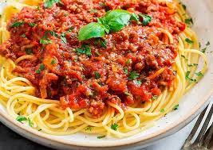

Macarrão a Bolonhesa

Aqui você vai aprender a prepararr aquele gostoso macarrao a Bolonhesa
e, siga os passos certinhos para conseguir fazer um almoço ou uma janta
pra lá de maravilhosa!!!
Ingredientes
- 1 cebola
- 1 colher de sopa de azeite de oliva
- 5 azeitonas verdes picadas
- 2 latas de molho de tomate pronto
- 2 Cubos de Caldo de carne ou legumes dissolvidos em 100ml de água
- 1 cenoura
- 2 tomates picados
- 500g de Macarrão
- 500g de Carne Moída
Passos